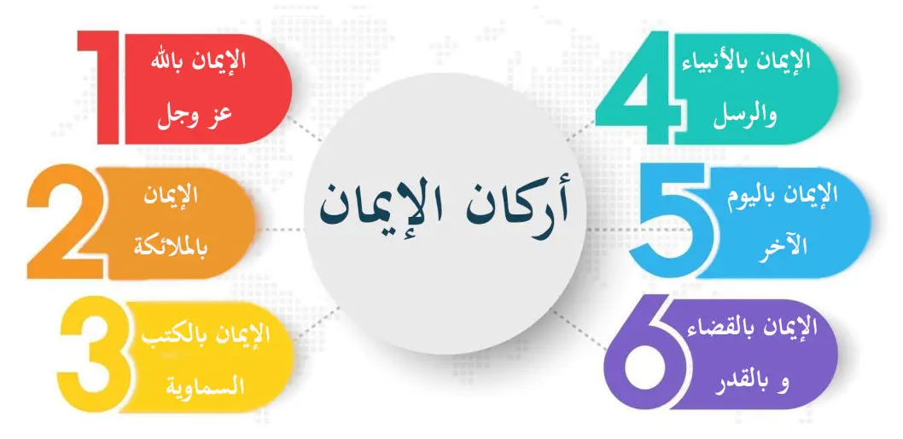

معنى الإيمان بالله
الإيمان بالله هو الاعتقاد الجازم بوجوده سبحانه وتعالى، وربوبيته، وألوهيته، وأسمائه وصفاته
أربعة أمور لا بد منها لتحقيق الإيمان بالله
الإيمان بالله يتضمن أربعة أمور، فمن آمن بها فهو المؤمن حقاًّ
الأول: الإيمان بوجود الله تعالى
ووجود الله تعالى قد دل عليه العقل والفطرة، فضلاً عن الأدلة الشرعية الكثيرة التي تدل على ذلك
أما دلالة الفطرة على وجود الله
فإن كل مخلوق قد فطر على الإيمان بخالقه من غير سبق تفكير أو تعليم، ولا ينصرف عن مقتضى هذه الفطرة إلا من طرأ على قلبه ما يصرفه عنها، ولذلك قال النبي صلى الله عليه وسلم: (مَا مِنْ مَوْلُودٍ إِلا يُولَدُ عَلَى الْفِطْرَةِ، فَأَبَوَاهُ يُهَوِّدَانِهِ، أَوْ يُنَصِّرَانِهِ، أَوْ يُمَجِّسَانِهِ) رواه البخاري (1358) ومسلم (2658)
وأما دلالة العقل على وجود الله تعالى
ـ فلأن هذه المخلوقات سابقها ولاحقها لا بد لها من خالق أوجدها، إذ لا يمكن أن توجِدَ نفسها بنفسها، ولا يمكن أن توجد صدفة.
فهي لا يمكن أن توجد نفسها بنفسها لأن الشيء لا يَخلق نفسَه، لأنه قبل وجوده معدوم، فكيف يكون خالقاً؟!
ولا يمكن أن توجد صدفة، لأن كل حادث لا بد له من محدث، ولأن وجودها على هذا النظام البديع المحكم، والتناسق المتآلف، والارتباط الملتحم بين الأسباب ومسبباتها، وبين الكائنات بعضها مع بعض يمنع منعاً باتاًّ أن يكون وجودها صدفة، إذ الموجود صدفة ليس على نظام في أصل وجوده، فكيف يكون منتظماً حال بقائه؟!
وإذا لم يمكن أن تُوجِد هذه المخلوقات نفسَها بنفسها، ولا أن توجَد صدفة، تعين أن يكون لها موجِدٌ وهو الله رب العالمين
من الأدلة العقلية على وجود الله في القرآن الكريم
وقـد ذكر الله تعالى هذا الدليل العقلي والبرهان القطعي في سورة الطور، حيث قال: (أَمْ خُلِقُوا مِنْ غَيْرِ شَيْءٍ أَمْ هُمُ الْخَالِقُونَ) الطور /35
يعني أنهم لم يخلقوا من غير خالق، ولا هم الذين خلقوا أنفسهم، فتعين أن يكون خالقهم هو الله تبارك وتعالى، ولهذا لما سمع جبير بن مطعم رسول الله صلى الله عليه وسلم يقرأ سورة الطور فبلغ هذه الآيات: (أم خلقوا من غير شيء أم هم الخالقون. أم خلقوا السمـوات والأرض بل لا يوقنـون. أم عندهـم خزائن ربك أم هم المسيطرون) الطور /35-37. وكان جبير يومئذ مشركاً قال: (كاد قلبي أن يطير، وذلك أول ما وقر الإيمان في قلبي) رواه البخاري في عدة مواضع
ولنضرب مثلاً يوضح ذلك
فإنه لو حدثك شخص عن قصر مشيد، أحاطت به الحدائق، وجرت بينها الأنهار، وملئ بالفُرُش والأَسِرّة، وزُيِّن بأنواع الزينة من مقوماته ومكملاته، وقال لك: إن هذا القصر وما فيه من كمال قد أوجد نفسه، أو وجد هكذا صدفة بدون موجد، لبادرت إلى إنكار ذلك وتكذيبه، وعددت حديثه سفهاً من القول، أفيجوز بعد ذلك أن يكون هذا الكون الواسع بأرضه، وسمائه، وأفلاكه، البديعُ الباهرُ، المحكَم المتقَنُ قد أوجد نفسه، أو وجد صدفة بدون موجد؟
وقد فهم هذا الدليل العقلي أعرابي يعيش في البادية، وعَبَّر عنها بأسلوبه، فلما سُئِل: بم عرفت ربك؟ فقال: البعرة تدل على البعير، والأثر يدل على المسير، فسماء ذات أبراج، وأرض ذات فجاج، وبحار ذات أمواج، ألا تدل على السميع البصير؟!
ثانياً: الإيمان بربوبيته تعالى
أي: بأنه وحده الرب لا شريك له ولا معين
والرب: هو من له الخلق، والملك، والتدبير، فلا خالق إلا الله، ولا مالك إلا الله، ولا مدبر للأمور إلا الله، قال الله تعالى: (أَلا لَهُ الْخَلْقُ وَالأَمْرُ) الأعراف /45. وقال تعالى: (قُلْ مَنْ يَرْزُقُكُمْ مِنَ السَّمَاءِ وَالأَرْضِ أَمَّنْ يَمْلِكُ السَّمْعَ وَالأَبْصَارَ وَمَنْ يُخْرِجُ الْحَيَّ مِنَ الْمَيِّتِ وَيُخْرِجُ الْمَيِّتَ مِنَ الْحَيِّ وَمَنْ يُدَبِّرُ الأَمْرَ فَسَيَقُولُونَ اللَّهُ فَقُلْ أَفَلا تَتَّقُونَ) يونس/31
وقال تعالى: (يُدَبِّرُ الأَمْرَ مِنَ السَّمَاءِ إِلَى الأَرْضِ ثُمَّ يَعْرُجُ إِلَيْهِ) السجدة /5. وقال: (ذَلِكُمُ اللَّهُ رَبُّكُمْ لَهُ الْمُلْكُ وَالَّذِينَ تَدْعُونَ مِنْ دُونِهِ مَا يَمْلِكُونَ مِنْ قِطْمِيرٍ) فاطر/13
وتأمل قول الله تعالى في سورة الفاتحة: (مَالِكِ يَوْمِ الدِّينِ) الفاتحة /4. وفي قراءة متواترة (مَلِكِ يَوْمِ الدِّينِ) وإذا جمعت بين القراءتين ظهر معنى بديع، فالملك أبلغ من المالك في السلطة والسيطرة، لكن الملك أحياناً يكون ملكاً بالاسم فقط لا بالتصرف، أي أنه لا يملك شيئاً من الأمر، وحينئذٍ يكون ملكاً ولكنه غير مالك، فإذا اجتمع أن الله تعالى ملكٌ ومالكٌ تم بذلك الأمر، بالملك والتدبير
الثالث: الإيمان بألوهيته
أي: بأنه الإله الحق لا شريك له
و(الإله) بمعنى (المألوه) أي: (المعبود) حباًّ وتعظيماً، وهذا هو معنى (لا إله إلا الله) أي: لا معبودَ حقٌّ إلا الله. قال تعالى: (وَإِلَهُكُمْ إِلَهٌ وَاحِدٌ لا إِلَهَ إِلا هُوَ الرَّحْمَنُ الرَّحِيمُ) البقرة /163. وقال تعالى: (شَهِدَ اللَّهُ أَنَّهُ لا إِلَهَ إِلا هُوَ وَالْمَلائِكَةُ وَأُولُو الْعِلْمِ قَائِماً بِالْقِسْطِ لا إِلَهَ إِلا هُوَ الْعَزِيزُ الْحَكِيمُ) آل عمران /18
وكل ما اتخذ إلهاً مع الله يعبد من دونه فألوهيته باطلة، قـال الله تعـالى: (ذَلِكَ بِأَنَّ اللَّهَ هُوَ الْحَقُّ وَأَنَّ مَا يَدْعُونَ مِنْ دُونِهِ هُوَ الْبَاطِلُ وَأَنَّ اللَّهَ هُوَ الْعَلِيُّ الْكَبِيرُ) الحج /62
وتسميتها آلهة لا يعطيها حق الألوهية. قال الله تعالى في (اللات والعزى ومناة): (إِنْ هِيَ إِلا أَسْمَاءٌ سَمَّيْتُمُوهَا أَنْتُمْ وَآبَاؤُكُمْ مَا أَنْزَلَ اللَّهُ بِهَا مِنْ سُلْطَانٍ) النجم/23
وقال تعالى عن يوسف عليه السلام أنه قال لصاحبي السجن: (أَأَرْبَابٌ مُتَفَرِّقُونَ خَيْرٌ أَمِ اللَّهُ الْوَاحِدُ الْقَهَّارُ - مَا تَعْبُدُونَ مِنْ دُونِهِ إِلا أَسْمَاءً سَمَّيْتُمُوهَا أَنْتُمْ وَآبَاؤُكُمْ مَا أَنْزَلَ اللَّهُ بِهَا مِنْ سُلْطَانٍ) يوسف /40
فلا يستحق أحد أن يعبد، ويفرد بالعبادة إلا الله عز وجل، لا يشاركه في هذا الحق أحدٌ، لا ملك مقرب ولا نبي مرسل، ولهذا كانت دعوة الرسل كلهم من أولهم إلى آخرهم هي الدعوة إلى قول (لا إله إلا الله) قال الله تعالى: (وَمَا أَرْسَلْنَا مِنْ قَبْلِكَ مِنْ رَسُولٍ إِلا نُوحِي إِلَيْهِ أَنَّهُ لا إِلَهَ إِلا أَنَا فَاعْبُدُونِ) الأنبياء /35. وقال: (وَلَقَدْ بَعَثْنَا فِي كُلِّ أُمَّةٍ رَسُولاً أَنِ اعْبُدُوا اللَّهَ وَاجْتَنِبُوا الطَّاغُوتَ) النحل/36
ولكن أبى ذلك المشركون، واتخذوا من دون الله آلهة، يعبدونهم مع الله سبحانه وتعالى، ويستنصرون بهم ويستغيثون
الرابع: الإيمان بأسمائه وصفاته
أي: إثبات ما أثبته الله لنفسه في كتابه، أو سنة رسوله صلى الله عليه وسلم من الأسماء والصفات على الوجه اللائق به سبحانه من غير تحريف، ولا تعطيل، ومن غير تكييف، ولا تمثيل. قال الله تعالى: (وَلِلَّهِ الأَسْمَاءُ الْحُسْنَى فَادْعُوهُ بِهَا وَذَرُوا الَّذِينَ يُلْحِدُونَ فِي أَسْمَائِهِ سَيُجْزَوْنَ مَا كَانُوا يَعْمَلُونَ) الأعراف /180
فهذه الآية دليل على إثبات الأسماء الحسنى لله تعالى. وقال تعالى: (وَلَهُ الْمَثَلُ الأَعْلَى فِي السَّمَاوَاتِ وَالأَرْضِ وَهُوَ الْعَزِيزُ الْحَكِيمُ) الروم /27. وهذه الآية دليل على إثبات صفات الكمال لله تعالى، لأن (المثل الأعلى) أي: الوصف الأكمل. فالآيتان تثبتان الأسماء الحسنى والصفات العلى لله تعالى على سبيل العموم. وأما تفصيل ذلك في الكتاب والسنة فكثير
وهذا الباب من أبواب العلم، أعني: أسماء الله تعالى وصفاته من أكثر الأبواب التي حصل فيها النـزاع والشقاق بين أفراد الأمة، فقد اختلفت الأمة في أسماء الله تعالى وصفاته فرقاً شتى
وموقفنا من هذا الاختلاف هو ما أمر الله به في قوله: (فَإِنْ تَنَازَعْتُمْ فِي شَيْءٍ فَرُدُّوهُ إِلَى اللَّهِ وَالرَّسُولِ إِنْ كُنْتُمْ تُؤْمِنُونَ بِاللَّهِ وَالْيَوْمِ الآخِرِ) النساء /59
فنحن نرد هذا التنازع إلى كتاب الله تعالى وسنة رسوله صلى الله عليه وسلم مسترشدين في ذلك بفهم السلف الصالح من الصحابة والتابعين لهذه الآيات والأحاديث فإنهم أعلم الأمة بمراد الله تعالى ومراد رسوله صلى الله عليه وسلم
ولقد صدق عبد الله بن مسعود وهو يصف أصحاب النبي صلى الله عليه وسلم فقال: (من كان منكم مستنا، فليستن بمن قد مات، فإن الحي لا يؤمن عليه الفتنة، أولئك أصحاب محمد صلى الله عليه وسلم، أبر هذه الأمة قلوبا، وأعمقها علما، وأقلها تكلفا، قوم اختارهم الله لإقامة دينه، وصحبة نبيه، فاعرفوا لهم حقهم، وتمسكوا بهديهم، فإنهم كانوا على الهدى المستقيم)
وكل من حاد عن طريق السلف في هذا الباب فقد أخطأ وضل واتبع غير سبيل المؤمنين واستحق الوعيد المذكور في قوله تعالى: (وَمَنْ يُشَاقِقِ الرَّسُولَ مِنْ بَعْدِ مَا تَبَيَّنَ لَهُ الْهُدَى وَيَتَّبِعْ غَيْرَ سَبِيلِ الْمُؤْمِنِينَ نُوَلِّهِ مَا تَوَلَّى وَنُصْلِهِ جَهَنَّمَ وَسَاءَتْ مَصِيراً) النساء /115
والله تعالى قد اشترط للهداية أن يكون الإيمان بمثل ما آمن به أصحاب النبي صلى الله عليه وسلم وذلك في قوله تعالى: (فَإِنْ آمَنُوا بِمِثْلِ مَا آمَنْتُمْ بِهِ فَقَدِ اهْتَدَوْا) البقرة /137
فكل من بَعُدَ وحاد عن طريق السلف فقد نقص من هدايته بمقدار بعده عن طريق السلف
وعلى هذا فالواجب في هذا الباب إثبات ما أثبته الله تعالى لنفسه أو أثبته له رسوله صلى الله عليه وسلم من الأسماء والصفات، وإجراء نصوص الكتاب والسنة على ظاهرها، والإيمان بها كما آمن أصحاب النبي صلى الله عليه وسلم ورضي عنهم، الذين هم أفضل هذه الأمة وأعلمها
أربعة أمور تنافي تحقيق الإيمان بأسماء الله وصفاته
ولكن يجب أن يعلم أن هناك أربعة محاذير من وقع في واحد منها لم يحقق الإيمان بأسماء الله تعالى وصفاته كما يجب، ولا يصح الإيمان بأسماء الله تعالى وصفاته إلا بانتفاء هذه المحاذير الأربعة وهي: التحريف، والتعطيل، والتمثيل، والتكييف
ولذلك قلنا في معنى الإيمان بأسماء الله تعالى وصفاته هو (إثبات ما أثبته الله لنفسه في كتابه، أو سنة رسوله صلى الله عليه وسلم من الأسماء والصفات على الوجه اللائق به من غير تحريف، ولا تعطيل، ولا تكييف، ولا تمثيل)
وهذا هو بيان هذه المحاذير الأربعة باختصار
التحريف
والمراد به تغيير معنى نصوص الكتاب والسنة من المعنى الحق الذي دلت عليه، والذي هو إثبات الأسماء الحسنى والصفات العلى لله تعالى إلى معنى آخر لم يرده الله تعالى ورسوله صلى الله عليه وسلم.
مثال ذلك
تحريفهم معنى صفة اليد الثابتة لله تعالى والواردة في كثير من النصوص بأن معناها النعمة أو القدرة
التعطيل
والمراد بالتعطيل نفي الأسماء الحسنى والصفات العلى أو بعضها عن الله تعالى
فكل من نفى عن الله تعالى اسماً من أسمائه أو صفة من صفاته مما ثبت في الكتاب أو السنة فإنه لم يؤمن بأسماء الله تعالى وصفاته إيماناً صحيحاً
التمثيل
وهو تمثيل صفة الله تعالى بصفة المخلوق، فيقال مثلاً: إن يد الله مثل يد المخلوق. أو إن الله تعالى يسمع مثل سمع المخلوق. أو إن الله تعالى استوى على العرش مثل استواء الإنسان على الكرسي... وهكذا
ولا شك أن تمثيل صفات الله تعالى بصفات خلقه منكر وباطل، قال الله تعالى: (لَيْسَ كَمِثْلِهِ شَيْءٌ وَهُوَ السَّمِيعُ الْبَصِيرُ) الشورى /11
التكييف
وهو تحديد الكيفية والحقيقة التي عليها صفات الله تعالى، فيحاول الإنسان تقديراً بقلبه، أو قولاً بلسانه أن يحدد كيفية صفة الله تعالى
وهذا باطل قطعاً، ولا يمكن للبشر العلم به، قال الله تعالى: (وَلا يُحِيطُونَ بِهِ عِلْماً) طـه /110
فمن استكمل هذه الأمور الأربعة فقد آمن بالله تعالى إيماناً صحيحاً
نسأل الله تعالى أن يثبتنا على الإيمان يتوفانا عليه.
والله تعالى أعلم.